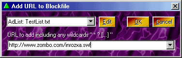

Blockfiles (or Blocklists if your license plate ends with an even number), also know as "`Putsu Putsu" (or "One who smells disturbingly of cauliflower") by a small native tribe in Pango-Pango. Have many and varied uses.
As the name would imply, they can be used to block stuff like ads, cookies and whatnot (especially whatnot in fact). However they can really do much more than that (which implies that what the name implies might imply a miss-applied name, but I digress).
Blocklists can be lists of anything really and can be used in Proxomitron filters anywhere you might want to check a list of items, but unless you make filters, you don't need to worry about that much. Most lists contain lists of website URLs (that www.stuff.com/... you see in your browser), and the idea is you can easily add new items to these lists.
Despite all this they're really simple to use (really, no I mean it, honest). Proxomitron comes with several pre-made lists....
| AdList | (This is a list of advertising URLs to block) |
| CookieList | (places where cookies are Allowed) |
| BypassList | (places where you don't want Proxomitron to change anything) |
| NoImages | (places where you only want to see text) |
These lists may be used by several filters to decided whether or not to do anything on a given site. Adding new sites to these lists is pretty easy. For example, say you see an ad or something on a page you'd like to block. Just do the following...
- First we need it's URL. Right-click over the image and select "Copy URL to clipboard" or whatever your browser happens to call it.
- Go to Proxomitron's System Tray Menu and select "Add to Blockfile".
- Pick the blockfile you want to add the URL too (AdList in our case)
- You should see the "Add URL to blockfile" dialog. Here you can clean the URL up a bit, add Wildcards if you like, and click OK to add the URL to a list.
Here's what the "Add URL to Blockfile" dialog looks like - note that when you add a new URL the "http://" bit will be removed for you. This is intentional - you don't want to include that bit...

Also, you can click on the drop-down list to the right of the URL edit box to get a list of all recent URLs. This can make finding the one you wish to block easier if the browser (or webmaster really) tries to hide it from you. Especially look for any hostname (it's the first part of the URL) that doesn't seem to match the site you're visiting.
Blocklists are really just plain 'ol text files. You can edit a blockfile here if you like too. Just click "Edit" and the list will open up in your favorite text editor (which will be whatever ".txt" files are set to use on your computer. In Windows the default is Notepad).
Before adding a URL, you may want to clean it up a bit first. Just include the bits of the URL you really need. For example an ad's URL might look pretty involved...
www.obnoxious-banners.com/ads/banners/pop?victim_id=232&annoyance=54&intrusion=100&invasiveness=45
Also each banner may be slightly different. The answer to this is not to use the whole thing. Looking at the URL above we see the ad comes from "www.obnoxious-banners.com". Hm, I think it's safe to say we don't want Anything from those guys. So, all we need to add to the blockfile is...
www.obnoxious-banners.com/
This will completely block any connections to "www.obnoxious-banners.com" and will happily kill all the ads they care to send us.
Sometimes advertisers will get sneaky and also change their hostnames on us. Look at the following...
ad121.obnoxious-banners.com/ads/banners/pop?victim_id=232... However we don't need to add all these numbers. A simple wildcard like an asterisk ' * ' will happily match them all...
*.obnoxious-banners.com/
That'll do nicely for most things. Once you know a bit more about matching you might also want to try some of the following...
Note: Although it'll work without it, if you use a beginning wildcard, be sure to end the hostname with a slash "/" (like the examples above). This helps Proxomitron search the list quickly.
Also using some of these fancier matches may sometimes work a little better that the asterisk ' * ' alone since an asterisk might also match a URL that had the word "someplace.com" after the hostname like so...
wwww.someplace-else-entirely.net/gamera/eats/someplace.com/for-lunch.html
ad232.obnoxious-banners.com/ads/banners/pop?victim_id=232...
ad454.obnoxious-banners.com/ads/banners/pop?victim_id=232...
(www.|)someplace.com/
Match www.someplace.com or just plain someplace.com
([^.]+.|)someplace.com/
Match anything-up-to-the-first-dot.someplace.com or plain someplace.com
[^/]++someplace.com/
Match anything.at.all.before.someplace.com
 Return to main index
Return to main index